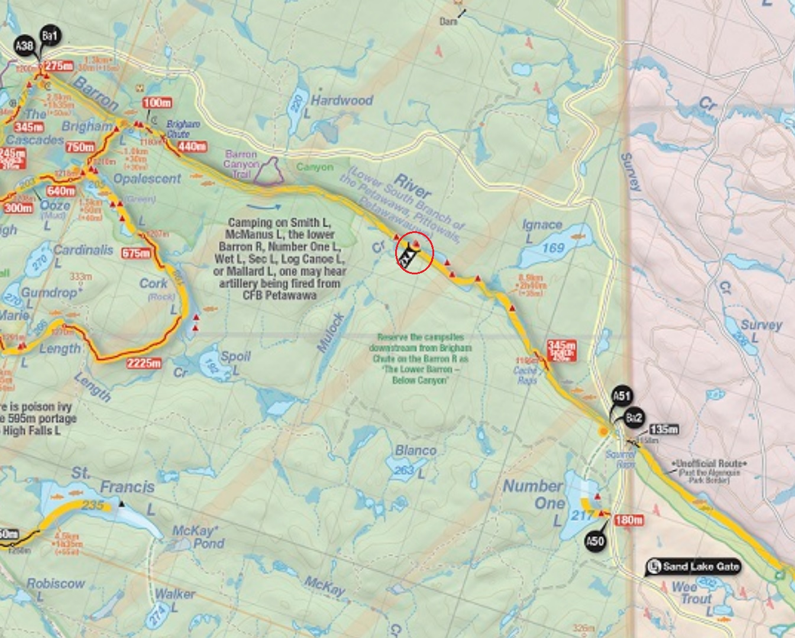
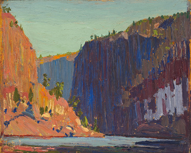
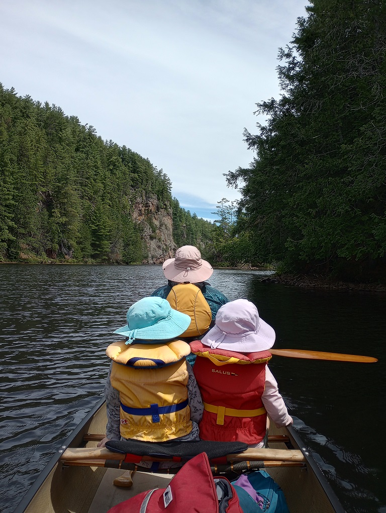

 |
2018 June 24 - Barron Canyon Day Trip from Access Point A51 (Just past Squirrel Rapids). Lunch spot circled on map. |
|
Took a day to go paddle the Barron Canyon, had hiked the lookout trail plenty of times but had never paddled underneath. Overcast day but nice for paddling. |
|
The canyon looks very different from this perspective. |
|
We packed a little lunch and stopped on a free site for lunch break. We paddled from the parking lot near squirrel rapids to P440, then turned around. |
|
Quite a nice paddle, I attempted to frame this photo similar to a Tom Thomson sketch of the area, but it is difficult to exactly line up as it is much more forested now than the original 1916 sketch. |  |
Tom Thomson - Petawawa Gorges (1916). There is a good writeup about finding many of Thomson's painging locations on Bob & Diana McElroy's site. |
 |
Returning to the canyon in 2025 with the family. |